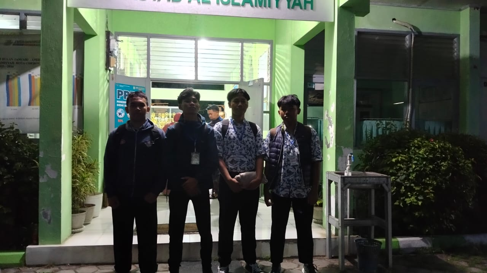

Persiapan Keberangkatan
Seluruh siswa mempersiapkan keberangkatan dengan antusias.kami berangkat ke sekolah dan sampai disekolah pukul 4:00, sebelum berangkat kami sholat terlebih dahulu dan sebelum masuk ke dalam bus siswa siswa di check tas nya serta absensi
